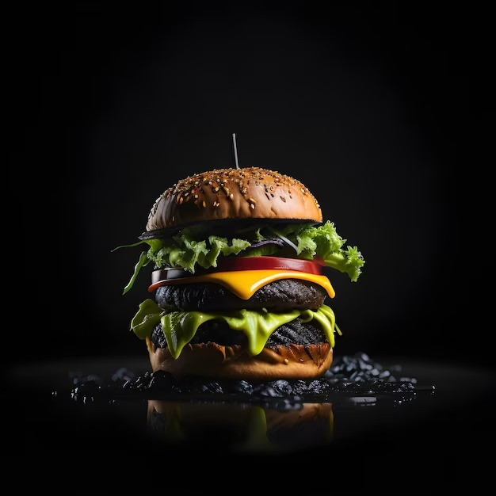

Hamburguesa Black Angus

Ingredientes
- 500 gramos de carne Black Angus molida
- 1 cucharadita de sal
- 1/2 cucharadita de pimienta negra molida
- 4 panes de hamburguesa
- Opciones de toppings: queso cheddar, tocino, cebolla caramelizada, lechuga, tomate, salsa barbacoa, etc.
Elaboración
- En un tazón, mezcla la carne Black Angus molida con la sal y la pimienta. Trata de no sobremanipular la carne para mantenerla jugosa.
- Divide la mezcla de carne en 4 porciones iguales y forma cada una en forma de hamburguesa, presionando ligeramente en el centro para evitar que se abulte durante la cocción.
- Calienta una parrilla o sartén a fuego medio-alto y rocía un poco de aceite para evitar que la hamburguesa se pegue.
- Coloca las hamburguesas en la parrilla o sartén caliente y cocínalas durante aproximadamente 4-5 minutos por cada lado, o hasta que alcancen el nivel de cocción deseado (rosado en el centro para jugosa, bien cocida para una hamburguesa más firme).
- Mientras tanto, puedes tostar los panes de hamburguesa en la parrilla o en el horno durante unos minutos hasta que estén ligeramente crujientes.
- Una vez que las hamburguesas estén listas, retíralas del fuego y déjalas reposar durante unos minutos.
- Ahora es el momento de armar tus hamburguesas. Agrega tus toppings favoritos como queso cheddar, tocino, cebolla caramelizada, lechuga, tomate, salsa barbacoa, etc.
- Coloca la hamburguesa en el pan tostado y cubre con la parte superior del pan.
- Sirve inmediatamente y disfruta de tu deliciosa hamburguesa Black Angus.